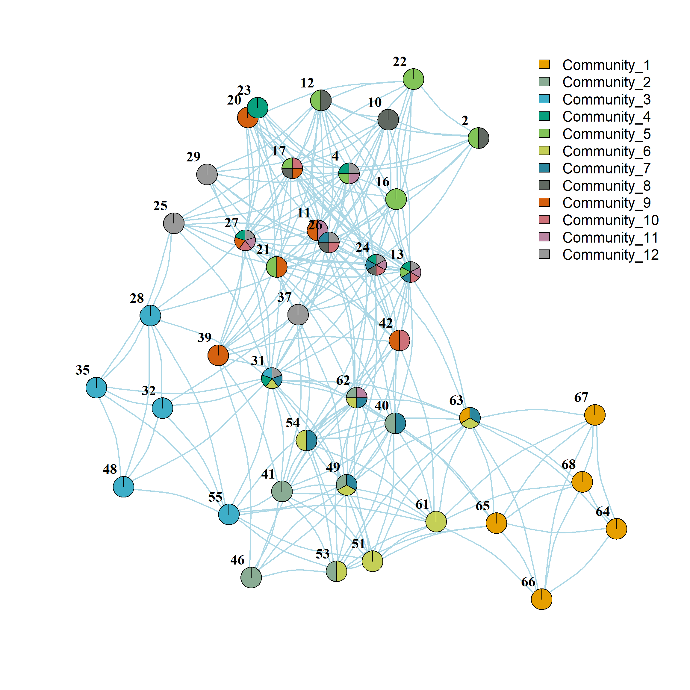

Using Cliques to Assign Nodes to Overlapping Communities
Palla et al. (2005) provide a simple and intuitive way to partition a network into overlapping communities. The basic idea is to take advantage of the fact that cliques within a network (fully connected subgraphs of a given size \(k\)) are likely to share nodes. Communiities can then be defined as concatenation of cliques, where the linkages between cliques are defined by some set shared number of members \(q\).
Let’s see how this works. First, let’s load up the friendship nomination network from Lazega (2001), constrained to be undirected:
What Palla et al. (2005) propose is to build communities from a set of maximal cliques (fully connected subgraphs of a given size \(k\) that are themselves not subsets of a larger fully connected subgraph).
So the first thing we need to do is settle on a value of \(k\), here we use \(k = 6\).
Finding Maximal Cliques and Creating a Bi-Adjacency Matrix
And now we can use the igraph function max_cliques to find all of the maximal cliques of that size:
We can see that there are 24 maximal cliques of size 6 by querying the length of the list returned by the max_cliques function (containing the node ids of the members of each clique as entries). We now have all of the information necessary to create our clique overlap matrix.
The first step is to create a bi-adjacency matrix to represent the affiliation network composed of people and the cliques they belong to (see here). To do that, we first create an empty bi-adjacency matrix full of zeros called m, loop through the list of maximal cliques we created earlier called cliques, and insert a one in the corresponding row/column combination:
n <- vcount(ug) #number of nodes
c <- length(cliques) #number of cliques
m <- matrix(0, nrow = n, ncol = c) #all zeros bi-adjacency matrix
for (i in 1:c) {
m[cliques[[i]], i] <- 1 #filling in bi-adjacency matrix
}
m[1:10, 1:10] [,1] [,2] [,3] [,4] [,5] [,6] [,7] [,8] [,9] [,10]
[1,] 0 0 0 0 0 0 0 0 0 0
[2,] 0 0 0 0 0 1 0 0 0 0
[3,] 0 0 0 0 0 0 0 0 0 0
[4,] 0 0 0 1 1 1 1 0 0 0
[5,] 0 0 0 0 0 0 0 0 0 0
[6,] 0 0 0 0 0 0 0 0 0 0
[7,] 0 0 0 0 0 0 0 0 0 0
[8,] 0 0 0 0 0 0 0 0 0 0
[9,] 0 0 0 0 0 0 0 0 0 0
[10,] 0 0 0 0 0 0 0 0 0 0The matrix m now has a one one in the corresponding cell if the row person belongs to the column clique and zero otherwise.
We can now use the standard projection trick due to Breiger (1974) to create a clique by clique overlap matrix (see here):
Binarizing the Clique Overlap Matrix
And now we binarize the clique overlap matrix co in three steps. First, we set the overlap matrix diagonals to zero. Second, we set to zero the entries corresponding to pairs of cliques that have an overlap equal to less than \(q = k-1\). Finally, we set to one all the remaining non-zero entries:
Our overlapping communities are the connected components of the resulting binarized clique graph:
cg <- graph_from_adjacency_matrix(co, mode = "undirected")
comps <- components(cg)$membership
names(comps) <- as.character(1:length(comps))
comps 1 2 3 4 5 6 7 8 9 10 11 12 13 14 15 16 17 18 19 20 21 22 23 24
1 2 3 4 5 5 5 6 6 6 7 7 7 8 7 9 10 9 11 12 7 12 12 12 [1] 12We can see that the analysis resulted in 12 overlapping clique communities.
Now, we create a list object containing the node ids for each of the twelve communities, merging together (using the native R function union) the nodes of the overlapping cliques that belong to the same component of the clique overlap graph:
And here are the node ids of each the 12 communities:
[[1]]
+ 6/68 vertices, named, from 76ad775:
[1] 68 63 67 66 65 64
[[2]]
+ 6/68 vertices, named, from 76ad775:
[1] 46 40 41 62 53 49
[[3]]
+ 6/68 vertices, named, from 76ad775:
[1] 35 28 31 55 48 32
[[4]]
+ 6/68 vertices, named, from 76ad775:
[1] 23 4 27 24 13 31
[[5]]
+ 8/68 vertices, named, from 76ad775:
[1] 16 12 17 4 21 13 22 2
[[6]]
+ 8/68 vertices, named, from 76ad775:
[1] 51 49 62 31 53 63 61 54
[[7]]
+ 9/68 vertices, named, from 76ad775:
[1] 54 13 24 49 62 40 63 31 26
[[8]]
+ 6/68 vertices, named, from 76ad775:
[1] 2 12 26 24 17 10
[[9]]
+ 7/68 vertices, named, from 76ad775:
[1] 20 17 27 39 11 21 42
[[10]]
+ 6/68 vertices, named, from 76ad775:
[1] 17 27 24 26 13 42
[[11]]
+ 6/68 vertices, named, from 76ad775:
[1] 13 24 27 11 62 4
[[12]]
+ 9/68 vertices, named, from 76ad775:
[1] 13 24 27 26 31 37 29 4 25Creating the Community Membership Bi-Adjacency Matrix
Next we create a two-mode bi-adjacency matrix containing the membership of each node in each of the twelve communities:
And we can use some fancy igraph pie chart plotting to visualize the mixed memberships of each node in each community:

We can see for instance that some sets of nodes (e.g., {64, 65, 66, 67, 68}) belong to communities with minimal overlap with others (closer to classical communities), while other nodes (e.g., 31) stand in the middle of multiple communities, centrally located at their intersection.